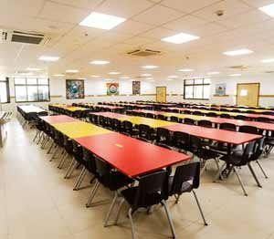
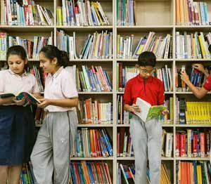
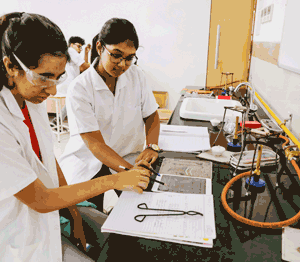
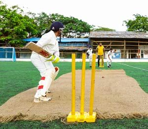

Established in 1927, by Sheth Anandilal Podar, Podar Education Group has, from the very beginning been focussed driven and motivated by the traditional Indian values of honesty, integrity and service.
With over 93 years of experience within the educational space, the Podar group is now a network of 131 educational institutions spread across the nation, with a combined student strength of more than 1,60,000 and the support of 7,600 dedicated and loyal staff members.
The Podar network of schools also offers a wide choice of educational streams such as the Central Board of Secondary Education (CBSE), Council for the Indian School Certificate Examinations (CISCE), Secondary School Certificate (SSC), Cambridge (IGCSE) and International Baccalaureate (IB).
Our scholastic record, innovative learning methods and strong commitment to delivering quality through integrity has helped us scale heights that few have managed in the field of education.
As a result, Podar today is a trusted name and an acknowledged leader in the collective effort to shape the future of our children and the nation through its wide network of top schools in India.
We welcome you to join the Podar family and to give your child the best when it comes to an integrated, holistic and empowering learning experience.
Podar International School has over 124 campuses across 9 states in India.
Podar International School comes under the aegis of the Podar Educational Complex which is managed by Anandilal and Ganesh Podar Society established in 1927. We became the pioneer of International Education in Mumbai city when we started the IB and Cambridge Assessments in 2003. Podar International School was founded on April 6th, 2004. Podar International School is authorised to offer the International Baccalaureate Primary Years Programme and Diploma Programme.
The School is also authorised to offer the International General Certificate for Secondary Education (IGCSE) and A-Levels from the Cambridge Assessment International Education. The school code for IBO is 002228, and school code for Cambridge International is IN420. At Podar International School, teachers have the best resources to provide the highest quality instruction. We continuously research and test new and different instructional materials. It help’s us stay current with emerging developments in education. We encourage teacher exploration and welcome recommendations for new resources that improve student learning.
With flexible walls and modular resources, our learning spaces are unique in themselves. It is equipped with SmartBoards and speakers to share and collaborate. The spaces play an essential role in the experience of our community. Podar International School’s team of teachers support students in and out of the classroom. Teaching Assistants, Reading Specialists, Science and Language Specialists, the School Psychologist, and Literacy Coach all support and enhance student learning. Additional support is available through our dedicated and qualified teachers, divisional counsellors, instructional coaches, and healthcare professionals.
The Podar International School places the highest importance on the health and safety of students and teachers. The school has a medical centre, open throughout the day with a qualified nurse available. Doctors are available on call for any emergency. The school has a resting room for students in case of ill-health or injury. For particular emergency, an ambulance is available 24×7 on campus.




A 9-student team from the group’s RN Podar school campus in Mumbai won at the ‘Beamline for Schools’ competition, 2018, conducted by CERN, the Geneva-based European Organisation for Nuclear Research, and became, along with International School of Manila, Philippines, the first Asian school teams to win the competition since its inception. In October 2019, a female student of the Podar International School, Mumbai was one of the ‘all-girls’ team that represented India in a robotics competition, First Global Challenge 2019, held in Dubai.
3 students from the Mumbai campuses of the Podar International School were awarded ‘Top in the World’ by Cambridge Assessment International Education for their exceptional performance across subjects in the Cambridge exams held in 2016-17. In the Cambridge exams in 2018-2019, 9 students from the Mumbai campuses of Podar International School were conferred ‘Outstanding Cambridge Learner Awards’ by Cambridge International for their exceptional performance across different subjects.
On February 10, 2018, students of the Podar International School, Mumbai won the junior and senior categories in the Mumbai round of ‘The Hindu Young World Quiz’ held at Bombay Teachers’ Training College in Colaba. In December 2018, 4 students of Podar International School, Shivamogga campus bagged the ‘Child Scientist’ award at the National Children’s Science Congress held in Bhubaneswar.